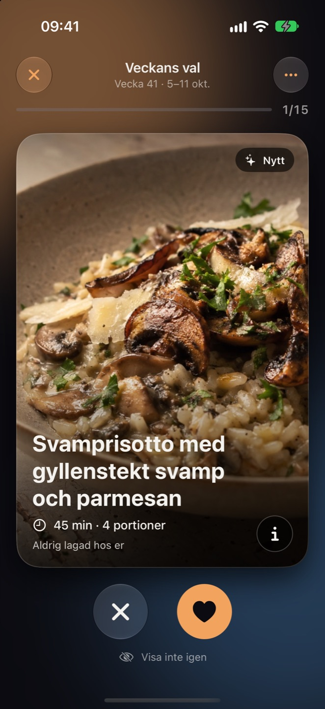
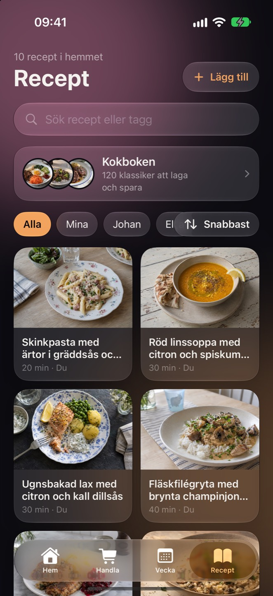
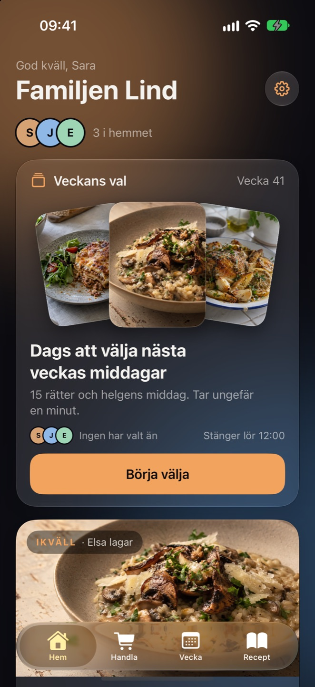
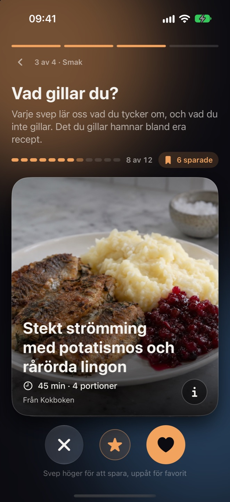

01 · VECKANS VAL
Svep fram veckans middagar.
Varje torsdag får hemmet en hög rätter. Alla sveper på sin egen telefon, och det ni gillar blir nästa veckas middagar. Det tar ungefär en minut.
Svep fram veckans middagar ihop, dela en inköpslista som alltid stämmer och laga steg för steg. Matro tar hand om tjatet, så att ni slipper.



120 klassiker i Kokboken, från kalops till pad thai.
Ingen mer *”vad* *blir* *det* *till* *middag?”* klockan fem. Ni sveper, Matro planerar och listan fyller sig själv.
Varje torsdag får hemmet en hög rätter. Alla sveper på sin egen telefon, och det ni gillar blir nästa veckas middagar. Det tar ungefär en minut.
Middagar, luncher, rester och vem som lagar. Flytta en dag med ett drag, och lägg hela veckans varor på listan med ett tryck.
Varorna sorteras efter hur butiken ser ut och syns direkt för alla. Den som står i affären bockar av, och det fungerar även när täckningen tar slut vid frysdisken.
Klistra in en länk eller fota en sida ur kokboken så läses receptet in. Ändra portioner så räknas allt om, och lägg ingredienserna på listan.
Stor text och en sak i taget. Vill du ha det ännu enklare skrivs stegen om på ett tryck, och timers ringer även när telefonen är låst.
Svep igenom några rätter när du går med. Det du gillar hamnar bland era recept, och förslagen lär sig vad hemmet tycker om.
Säg vad ni undviker och vad ni aldrig äter, så hoppas sådant över så gott det går.

Det du gör syns direkt och skickas när täckningen är tillbaka. Listan och recepten finns kvar i telefonen.
Planera veckan och bläddra bland recepten på den stora skärmen. Allt synkas med hemmets telefoner.
Sommarstugan, eller varannan vecka hos pappa. Var med i flera hem och byt med ett tryck.
Liquid Glass, timers och matlagning på låsskärmen, och Logga in med Apple.
Matro testas just nu av vänner och familj. Vill du vara med från start? Hör av dig till team.app.consortium{at}gmail{dot}com.